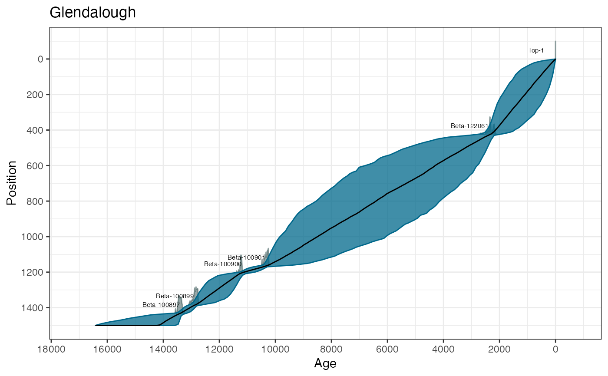

R/Bchronology.R
Bchronology.RdFits a non-parametric chronology model to age/position data according to the Compound Poisson-Gamma model defined by Haslett and Parnell (2008) <DOI:10.1111/j.1467-9876.2008.00623.x>. This version uses a slightly modified Markov chain Monte Carlo fitting algorithm which aims to converge quicker and requires fewer iterations. It also a slightly modified procedure for identifying outliers
Bchronology( ages, ageSds, positions, positionThicknesses = rep(0, length(ages)), calCurves = rep("intcal13", length(ages)), ids = NULL, outlierProbs = rep(0.01, length(ages)), predictPositions = seq(min(positions), max(positions), length = 100), pathToCalCurves = system.file("data", package = "Bchron"), jitterPositions = FALSE, iterations = 10000, burn = 2000, thin = 8, extractDate = 1950 - as.numeric(format(Sys.time(), "%Y")), maxExtrap = 1000, thetaMhSd = 0.5, muMhSd = 0.1, psiMhSd = 0.1, ageScaleVal = 1000, positionNormalise = TRUE )
| ages | A vector of ages (most likely 14C) |
|---|---|
| ageSds | A vector of 1-sigma values for the ages given above |
| positions | Position values (e.g. depths) for each age |
| positionThicknesses | Thickness values for each of the positions. The thickness value should be the full thickness value of the slice. By default set to zero. |
| calCurves | A vector of values containing either 'intcal13', 'shcal13', 'marine13', or 'normal'. Should be the same length the number of ages supplied. Non-standard calibration curves can be used provided they are supplied in the same format as those previously mentioned and are placed in the same directory, or created via |
| ids | ID names for each age |
| outlierProbs | A vector of prior outlier probabilities, one for each age. Defaults to 0.01 |
| predictPositions | A vector of positions (e.g. depths) at which predicted age values are required. Defaults to a sequence of length 100 from the top position to the bottom position |
| pathToCalCurves | File path to where the calibration curves are located. Defaults to the system directory where the 3 standard calibration curves are stored. |
| jitterPositions | Whether to jigger the positions at startup or not. Default is FALSE but if there are lots of dates at similar depths this may resolve some initialisation problems |
| iterations | The number of iterations to run the procedure for |
| burn | The number of starting iterations to discard |
| thin | The step size for every iteration to keep beyond the burnin |
| extractDate | The top age of the core. Used for extrapolation purposes so that no extrapolated ages go beyond the top age of the core. Defaults to the current year |
| maxExtrap | The maximum number of extrapolations to perform before giving up and setting the predicted ages to NA. Useful for when large amounts of extrapolation are required, i.e. some of the predictPositions are a long way from the dated positions |
| thetaMhSd | The Metropolis-Hastings standard deviation for the age parameters |
| muMhSd | The Metropolis-Hastings standard deviation for the Compound Poisson-Gamma mean |
| psiMhSd | The Metropolis-Hastings standard deviation for the Compound Poisson-Gamma scale |
| ageScaleVal | A scale value for the ages. |
| positionNormalise | Whether to normalise the position values. |
A list of class BchronologyRun which include elements:
The posterior estimated values of the ages
The posterior estimated outlier values (1=outlier, 2=not outlier). The means of this parameter give the posterior estimated outlier probabilities
The posterior values of the Compound Poisson-Gamma mean
The posterior values of the Compound Poisson-Gamma scale
The posterior estimated ages for each of the values in predictPosition
The positions at which estimated ages were required
The calibrated ages as output from BchronCalibrate
All of the input values to the Bchronology run
The Bchronology function fits a compound Poisson-Gamma distribution to the increments between the dated levels. This involves a stochastic linear interpolation step where the age gaps are Gamma distributed, and the position gaps are Exponential. Radiocarbon and non-radiocarbon dates (including outliers) are updated within the function also by MCMC.
Haslett, J., and Parnell, A. C. (2008). A simple monotone process with application to radiocarbon-dated depth chronologies. Journal of the Royal Statistical Society, Series C, 57, 399-418. DOI:10.1111/j.1467-9876.2008.00623.x Parnell, A. C., Haslett, J., Allen, J. R. M., Buck, C. E., and Huntley, B. (2008). A flexible approach to assessing synchroneity of past events using Bayesian reconstructions of sedimentation history. Quaternary Science Reviews, 27(19-20), 1872-1885. DOI:10.1016/j.quascirev.2008.07.009
# \donttest{ # Data from Glendalough data(Glendalough) # Run in Bchronology - all but first age uses intcal13 GlenOut = Bchronology(ages=Glendalough$ages,ageSds=Glendalough$ageSds, calCurves=Glendalough$calCurves,positions=Glendalough$position, positionThicknesses=Glendalough$thickness,ids=Glendalough$id, predictPositions=seq(0,1500,by=10))#> | | | 0% | | | 1% | |= | 1% | |= | 2% | |== | 3% | |== | 4% | |=== | 4% | |=== | 5% | |=== | 6% | |==== | 6% | |==== | 7% | |===== | 8% | |===== | 9% | |====== | 9% | |====== | 10% | |====== | 11% | |======= | 11% | |======= | 12% | |======== | 13% | |======== | 14% | |========= | 14% | |========= | 15% | |========= | 16% | |========== | 16% | |========== | 17% | |=========== | 18% | |=========== | 19% | |============ | 19% | |============ | 20% | |============ | 21% | |============= | 21% | |============= | 22% | |============== | 23% | |============== | 24% | |=============== | 24% | |=============== | 25% | |=============== | 26% | |================ | 26% | |================ | 27% | |================= | 28% | |================= | 29% | |================== | 29% | |================== | 30% | |================== | 31% | |=================== | 31% | |=================== | 32% | |==================== | 33% | |==================== | 34% | |===================== | 34% | |===================== | 35% | |===================== | 36% | |====================== | 36% | |====================== | 37% | |======================= | 38% | |======================= | 39% | |======================== | 39% | |======================== | 40% | |======================== | 41% | |========================= | 41% | |========================= | 42% | |========================== | 43% | |========================== | 44% | |=========================== | 44% | |=========================== | 45% | |=========================== | 46% | |============================ | 46% | |============================ | 47% | |============================= | 48% | |============================= | 49% | |============================== | 49% | |============================== | 50% | |============================== | 51% | |=============================== | 51% | |=============================== | 52% | |================================ | 53% | |================================ | 54% | |================================= | 54% | |================================= | 55% | |================================= | 56% | |================================== | 56% | |================================== | 57% | |=================================== | 58% | |=================================== | 59% | |==================================== | 59% | |==================================== | 60% | |==================================== | 61% | |===================================== | 61% | |===================================== | 62% | |====================================== | 63% | |====================================== | 64% | |======================================= | 64% | |======================================= | 65% | |======================================= | 66% | |======================================== | 66% | |======================================== | 67% | |========================================= | 68% | |========================================= | 69% | |========================================== | 69% | |========================================== | 70% | |========================================== | 71% | |=========================================== | 71% | |=========================================== | 72% | |============================================ | 73% | |============================================ | 74% | |============================================= | 74% | |============================================= | 75% | |============================================= | 76% | |============================================== | 76% | |============================================== | 77% | |=============================================== | 78% | |=============================================== | 79% | |================================================ | 79% | |================================================ | 80% | |================================================ | 81% | |================================================= | 81% | |================================================= | 82% | |================================================== | 83% | |================================================== | 84% | |=================================================== | 84% | |=================================================== | 85% | |=================================================== | 86% | |==================================================== | 86% | |==================================================== | 87% | |===================================================== | 88% | |===================================================== | 89% | |====================================================== | 89% | |====================================================== | 90% | |====================================================== | 91% | |======================================================= | 91% | |======================================================= | 92% | |======================================================== | 93% | |======================================================== | 94% | |========================================================= | 94% | |========================================================= | 95% | |========================================================= | 96% | |========================================================== | 96% | |========================================================== | 97% | |=========================================================== | 98% | |=========================================================== | 99% | |============================================================| 99% | |============================================================| 100%# Summarise it a few different ways summary(GlenOut) # Default is for quantiles of ages at predictPosition values#> Quantiles of predicted ages by depth: #> Depth 2.5% 25% 50% 75% 97.5% #> 0 -2.000 -1.00 0.0 1.00 1.025 #> 10 10.000 34.00 61.0 146.00 562.025 #> 20 21.975 67.00 121.0 254.00 809.075 #> 30 32.975 101.75 178.0 348.00 912.150 #> 40 44.975 139.00 236.0 429.00 1051.275 #> 50 57.975 175.00 293.5 499.50 1141.125 #> 60 70.975 214.00 350.5 572.25 1235.075 #> 70 85.975 252.00 406.0 633.25 1262.075 #> 80 100.975 288.00 462.0 697.50 1350.100 #> 90 115.975 334.75 514.5 754.50 1411.100 #> 100 135.850 377.75 572.0 812.75 1475.125 #> 110 154.850 418.75 620.5 884.25 1534.050 #> 120 180.975 459.75 674.0 946.25 1594.125 #> 130 199.925 495.00 724.0 1002.00 1652.100 #> 140 219.950 535.50 771.0 1055.50 1690.125 #> 150 241.875 591.75 823.0 1125.75 1702.375 #> 160 261.900 641.50 877.5 1185.25 1743.000 #> 170 283.925 691.00 942.0 1244.50 1787.025 #> 180 300.900 734.25 1007.0 1292.50 1849.200 #> 190 318.000 776.00 1059.5 1340.75 1881.050 #> 200 350.950 820.75 1117.0 1402.50 1923.125 #> 210 369.900 860.75 1162.5 1454.00 1978.100 #> 220 402.875 908.00 1210.0 1501.25 1995.150 #> 230 439.950 963.75 1258.0 1541.00 2021.100 #> 240 482.800 1012.50 1302.0 1587.50 2055.025 #> 250 503.975 1065.25 1356.0 1641.00 2083.025 #> 260 538.950 1115.75 1408.0 1696.00 2115.100 #> 270 584.525 1160.50 1456.0 1741.00 2130.075 #> 280 614.800 1220.75 1512.0 1779.00 2147.300 #> 290 674.400 1270.50 1570.0 1827.75 2166.300 #> 300 729.850 1340.25 1630.5 1866.25 2193.100 #> 310 783.800 1399.75 1683.0 1913.00 2219.275 #> 320 830.875 1451.50 1725.5 1953.25 2249.350 #> 330 902.725 1508.75 1783.0 1993.00 2278.075 #> 340 969.725 1571.00 1842.5 2033.25 2326.300 #> 350 1024.550 1648.75 1894.0 2072.00 2352.075 #> 360 1091.775 1702.00 1949.0 2107.25 2375.225 #> 370 1158.575 1773.25 2002.5 2143.00 2408.100 #> 380 1265.900 1844.00 2059.5 2183.00 2443.075 #> 390 1359.925 1928.75 2111.0 2222.00 2479.050 #> 400 1478.825 2013.75 2160.0 2258.25 2527.050 #> 410 1656.900 2104.75 2213.0 2301.25 2579.025 #> 420 1827.900 2184.00 2283.5 2337.00 2624.075 #> 430 2207.975 2342.00 2403.0 2509.75 3063.425 #> 440 2255.975 2421.00 2543.0 2766.75 3743.450 #> 450 2297.925 2497.75 2664.5 2942.75 4141.050 #> 460 2345.875 2571.00 2773.5 3141.50 4365.450 #> 470 2376.850 2636.00 2881.0 3297.75 4589.500 #> 480 2405.875 2711.50 2990.0 3435.25 4902.025 #> 490 2432.975 2775.00 3100.5 3596.75 5095.150 #> 500 2452.950 2840.00 3218.0 3777.75 5312.900 #> 510 2478.850 2911.75 3331.5 3923.00 5544.300 #> 520 2531.000 2980.50 3462.0 4031.50 5764.050 #> 530 2556.000 3064.50 3546.5 4162.75 5925.900 #> 540 2581.975 3135.50 3664.5 4306.25 5989.150 #> 550 2606.800 3208.25 3779.0 4451.00 6266.175 #> 560 2629.800 3307.50 3887.0 4580.25 6357.325 #> 570 2663.875 3378.25 3994.5 4706.75 6408.975 #> 580 2690.875 3456.50 4112.5 4814.25 6577.500 #> 590 2721.850 3545.00 4210.5 4918.00 6787.175 #> 600 2749.875 3624.25 4312.5 5047.50 6974.050 #> 610 2778.900 3706.25 4421.0 5182.00 7078.275 #> 620 2813.925 3767.00 4498.0 5314.25 7214.000 #> 630 2863.950 3880.25 4600.0 5418.50 7284.250 #> 640 2905.575 3966.00 4711.5 5499.25 7354.350 #> 650 2942.600 4062.25 4818.5 5620.50 7413.900 #> 660 2993.250 4137.75 4925.5 5718.75 7549.375 #> 670 3046.750 4247.50 5038.0 5796.50 7762.425 #> 680 3126.825 4361.25 5140.0 5902.00 7869.150 #> 690 3198.050 4460.75 5246.5 6017.00 7919.325 #> 700 3224.200 4566.75 5346.0 6105.25 8021.550 #> 710 3259.775 4654.75 5445.5 6236.00 8077.275 #> 720 3321.000 4760.75 5545.5 6360.75 8122.775 #> 730 3369.625 4869.75 5666.0 6465.25 8259.050 #> 740 3409.475 4951.25 5775.0 6544.25 8372.000 #> 750 3502.425 5068.75 5904.5 6614.25 8559.100 #> 760 3527.950 5170.25 5994.0 6732.75 8641.725 #> 770 3576.700 5251.00 6104.0 6852.25 8701.025 #> 780 3672.825 5381.50 6211.5 6960.25 8754.900 #> 790 3715.700 5468.75 6292.0 7083.50 8849.100 #> 800 3791.750 5557.25 6395.0 7194.75 8867.300 #> 810 3879.725 5625.00 6533.5 7282.75 8944.450 #> 820 3990.650 5748.75 6634.5 7407.25 8983.650 #> 830 4021.250 5860.75 6739.5 7504.25 9055.975 #> 840 4129.675 5971.00 6864.0 7593.25 9132.200 #> 850 4196.475 6037.75 6943.5 7662.50 9169.225 #> 860 4286.875 6133.00 7041.5 7785.00 9207.200 #> 870 4308.550 6258.75 7144.0 7873.75 9253.225 #> 880 4401.850 6341.50 7242.5 7993.50 9306.725 #> 890 4452.625 6444.75 7343.5 8074.25 9380.250 #> 900 4519.450 6570.75 7455.0 8154.50 9401.600 #> 910 4631.950 6696.00 7571.5 8251.50 9434.025 #> 920 4864.375 6797.50 7670.5 8348.50 9468.225 #> 930 4996.950 6885.00 7746.5 8448.25 9548.125 #> 940 5165.350 6999.25 7860.0 8539.50 9580.175 #> 950 5244.400 7085.75 7969.5 8623.00 9607.325 #> 960 5410.625 7180.25 8081.0 8716.00 9654.475 #> 970 5512.925 7333.75 8163.5 8792.50 9765.050 #> 980 5642.825 7452.50 8286.0 8887.50 9801.275 #> 990 5731.600 7630.50 8378.5 8999.00 9857.250 #> 1000 5787.175 7762.25 8472.5 9079.50 9878.075 #> 1010 5895.650 7878.50 8568.0 9162.25 9934.025 #> 1020 5955.550 7987.75 8677.0 9226.00 9966.125 #> 1030 6072.050 8100.50 8792.0 9292.00 9995.150 #> 1040 6336.025 8215.50 8890.5 9392.50 10022.050 #> 1050 6567.175 8341.25 9000.5 9486.00 10054.100 #> 1060 6690.500 8459.75 9103.5 9571.00 10083.050 #> 1070 6892.725 8594.25 9202.0 9642.25 10115.000 #> 1080 7056.575 8716.00 9313.5 9721.50 10143.100 #> 1090 7184.500 8849.25 9418.5 9802.25 10172.125 #> 1100 7330.925 8975.25 9513.5 9878.00 10201.000 #> 1110 7532.750 9150.25 9627.0 9943.25 10226.050 #> 1120 7825.950 9313.50 9746.0 10010.25 10257.000 #> 1130 8017.575 9460.75 9870.5 10085.00 10290.100 #> 1140 8297.175 9650.75 9981.0 10154.25 10327.000 #> 1150 8781.975 9882.25 10113.0 10220.00 10358.250 #> 1160 9358.900 10130.75 10229.5 10297.25 10418.000 #> 1170 10300.000 10372.75 10425.5 10483.00 10807.050 #> 1180 10429.950 10603.00 10653.0 10709.00 10997.025 #> 1190 10540.950 10839.00 10889.0 10940.25 11115.025 #> 1200 10780.475 11085.75 11124.0 11163.25 11248.050 #> 1210 11188.000 11249.00 11284.0 11364.00 11715.300 #> 1220 11230.000 11310.50 11376.0 11507.00 12044.375 #> 1230 11260.975 11371.00 11458.5 11633.00 12202.200 #> 1240 11284.950 11432.00 11546.0 11733.25 12287.075 #> 1250 11307.975 11494.50 11631.0 11837.50 12370.125 #> 1260 11336.000 11559.00 11716.5 11935.00 12449.075 #> 1270 11361.950 11624.00 11808.5 12031.00 12493.150 #> 1280 11394.975 11700.00 11896.0 12114.25 12568.075 #> 1290 11424.925 11779.00 11976.5 12200.00 12602.150 #> 1300 11449.925 11869.00 12061.0 12296.25 12638.075 #> 1310 11487.900 11949.75 12149.5 12356.00 12669.050 #> 1320 11526.975 12034.00 12234.5 12429.00 12701.025 #> 1330 11584.900 12119.00 12314.0 12492.00 12733.050 #> 1340 11646.975 12219.75 12405.0 12558.25 12761.025 #> 1350 11716.975 12317.50 12490.5 12621.00 12793.025 #> 1360 11840.250 12426.00 12584.0 12681.25 12835.025 #> 1370 12041.900 12569.00 12664.5 12737.25 12884.025 #> 1380 12402.900 12709.00 12754.5 12811.00 12941.100 #> 1390 12787.000 12840.75 12890.5 12964.25 13143.050 #> 1400 12845.975 12962.00 13005.5 13076.25 13247.075 #> 1410 12899.975 13073.00 13120.0 13181.00 13312.125 #> 1420 12975.000 13184.75 13236.5 13282.25 13372.025 #> 1430 13155.850 13301.00 13348.0 13391.25 13461.100 #> 1440 13330.950 13424.75 13493.0 13608.25 14329.425 #> 1450 13364.950 13487.00 13607.5 13821.50 14765.375 #> 1460 13389.975 13547.25 13709.5 14001.50 15113.275 #> 1470 13413.000 13604.75 13818.5 14162.25 15354.300 #> 1480 13432.975 13661.00 13932.5 14328.00 15619.125 #> 1490 13448.975 13714.50 14028.5 14447.75 15803.450 #> 1500 13468.975 13773.75 14121.0 14571.25 16109.425#> Convergence check (watch for too many small p-values): #> p-value #> RateMean 0.00056 #> Outlier 5 0.00691 #> Beta-100900 0.01690 #> Outlier 4 0.04132 #> Beta-100897 0.08515 #> RateVar 0.09043 #> Beta-100901 0.12219 #> Outlier 1 0.17160 #> Beta-122061 0.18692 #> Outlier 3 0.20735 #> Top-1 0.27570 #> Outlier 2 0.28871 #> Beta-100899 0.29602 #> Outlier 6 0.42872#> Posterior outlier probability by date: #> Date OutlierProb #> Top-1 0.011 #> Beta-122061 0.007 #> Beta-100901 0.007 #> Beta-100900 0.007 #> Beta-100899 0.012 #> Beta-100897 0.009# Predict for some new positions predictAges = predict(GlenOut, newPositions = c(150,725,1500), newPositionThicknesses=c(5,0,20))#> | | | 0% | | | 1% | |= | 1% | |= | 2% | |== | 3% | |== | 4% | |=== | 4% | |=== | 5% | |=== | 6% | |==== | 6% | |==== | 7% | |===== | 8% | |===== | 9% | |====== | 9% | |====== | 10% | |====== | 11% | |======= | 11% | |======= | 12% | |======== | 13% | |======== | 14% | |========= | 14% | |========= | 15% | |========= | 16% | |========== | 16% | |========== | 17% | |=========== | 18% | |=========== | 19% | |============ | 19% | |============ | 20% | |============ | 21% | |============= | 21% | |============= | 22% | |============== | 23% | |============== | 24% | |=============== | 24% | |=============== | 25% | |=============== | 26% | |================ | 26% | |================ | 27% | |================= | 28% | |================= | 29% | |================== | 29% | |================== | 30% | |================== | 31% | |=================== | 31% | |=================== | 32% | |==================== | 33% | |==================== | 34% | |===================== | 34% | |===================== | 35% | |===================== | 36% | |====================== | 36% | |====================== | 37% | |======================= | 38% | |======================= | 39% | |======================== | 39% | |======================== | 40% | |======================== | 41% | |========================= | 41% | |========================= | 42% | |========================== | 43% | |========================== | 44% | |=========================== | 44% | |=========================== | 45% | |=========================== | 46% | |============================ | 46% | |============================ | 47% | |============================= | 48% | |============================= | 49% | |============================== | 49% | |============================== | 50% | |============================== | 51% | |=============================== | 51% | |=============================== | 52% | |================================ | 53% | |================================ | 54% | |================================= | 54% | |================================= | 55% | |================================= | 56% | |================================== | 56% | |================================== | 57% | |=================================== | 58% | |=================================== | 59% | |==================================== | 59% | |==================================== | 60% | |==================================== | 61% | |===================================== | 61% | |===================================== | 62% | |====================================== | 63% | |====================================== | 64% | |======================================= | 64% | |======================================= | 65% | |======================================= | 66% | |======================================== | 66% | |======================================== | 67% | |========================================= | 68% | |========================================= | 69% | |========================================== | 69% | |========================================== | 70% | |========================================== | 71% | |=========================================== | 71% | |=========================================== | 72% | |============================================ | 73% | |============================================ | 74% | |============================================= | 74% | |============================================= | 75% | |============================================= | 76% | |============================================== | 76% | |============================================== | 77% | |=============================================== | 78% | |=============================================== | 79% | |================================================ | 79% | |================================================ | 80% | |================================================ | 81% | |================================================= | 81% | |================================================= | 82% | |================================================== | 83% | |================================================== | 84% | |=================================================== | 84% | |=================================================== | 85% | |=================================================== | 86% | |==================================================== | 86% | |==================================================== | 87% | |===================================================== | 88% | |===================================================== | 89% | |====================================================== | 89% | |====================================================== | 90% | |====================================================== | 91% | |======================================================= | 91% | |======================================================= | 92% | |======================================================== | 93% | |======================================================== | 94% | |========================================================= | 94% | |========================================================= | 95% | |========================================================= | 96% | |========================================================== | 96% | |========================================================== | 97% | |=========================================================== | 98% | |=========================================================== | 99% | |============================================================| 99% | |============================================================| 100%# Plot the output plot(GlenOut,main="Glendalough",xlab='Age (cal years BP)',ylab='Depth (cm)',las=1)# }